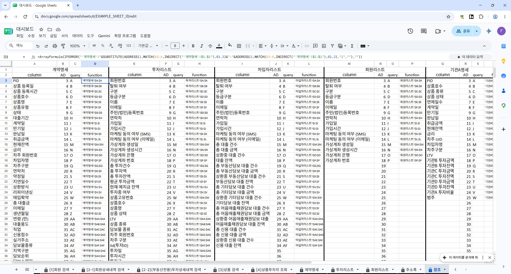
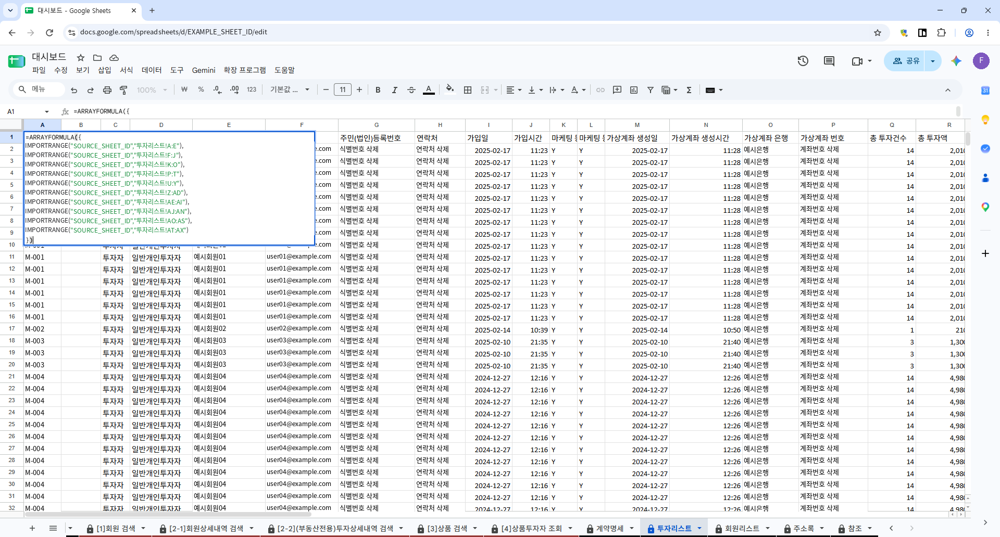

SPREADSHEET APPLICATION
엑셀로 만든
실무자용 대시보드
전산 환경이 부족한 조직에서 사용할 조회·집계 도구를 만들었습니다.
열 이름으로 참조열을 구성해 원천자료의 열 순서와 양식 변경에 대응하고, 별도로 관리하는 원장을 연결해 대출·투자 현황을 조회합니다.
여러 원장을 연결해 한 파일에서 조회합니다.
업무 프로그램을 충분히 갖추기 어려운 환경에서 필요한 화면을 엑셀로 만들었습니다. 회원·상품 단위로 원자료를 연결하고 실무자가 검색 조건을 바꿔 잔액과 투자 현황을 확인하도록 했습니다.
자료를 다시 내려받을 때 열이 추가되거나 순서가 바뀌는 경우를 고려해, 열 이름과 실제 위치를 연결하는 참조표를 두었습니다. 원천자료와 조회 화면도 별도 문서로 나누어 관리했습니다.
아래는 Google Sheets에서 사용한 화면입니다. 개인·회사 식별정보와 문서 주소는 가리거나 예시로 바꿨습니다.
회원별 대출 현황
회원 정보를 조회하고 상품별 취급액·잔액·상환 상태를 확인합니다.

열 순서와 열 이름 변경에 대응합니다.
원천별 열 이름을 참조표에서 연결하고, 실제 헤더에서 해당 열의 위치를 찾습니다. 찾은 위치로 참조 주소를 만든 뒤 INDIRECT로 조회·집계 수식에 연결합니다.
열이 추가되거나 순서가 바뀌면 새 위치를 참조합니다. 열 이름이 다른 양식도 참조표의 항목 대응을 기준으로 같은 조회 화면에서 처리하도록 구성했습니다.
조회에 필요한 항목과 원천 열 이름을 연결하고, MATCH로 헤더 위치를 찾습니다.
ADDRESS와 SUBSTITUTE로 열 주소를 만들고, 원천 시트명을 붙여 참조표에 모읍니다.
생성한 주소를 실제 참조 범위로 받아 회원·상품 검색과 잔액·연체율 계산에 사용합니다.

원천자료는 별도 문서에서 관리합니다.
원천자료를 관리하는 문서와 대시보드 문서를 나누었습니다. 대시보드는 필요한 범위를 연결해 조회하므로 원장 갱신과 화면 관리를 구분할 수 있습니다.
첨부한 Google Sheets 화면에서는 IMPORTRANGE로 외부 문서의 열 범위를 가져옵니다. 가져온 열 범위를 배열식으로 한 표에 묶고, 참조표와 조회·집계 화면에 연결합니다.

참조 생성·원천 연결·조회와 집계
- 제작·사용 환경
- Microsoft Excel · Google Sheets
- 동적 열 참조
- 열 이름 매핑 → MATCH로 위치 확인 → ADDRESS·SUBSTITUTE로 주소 생성 → INDIRECT로 범위 참조
- 원천 문서 연결
- Google Sheets의 IMPORTRANGE로 별도 문서의 열 범위 연결
- 배열 처리
- Google Sheets의 ARRAYFORMULA로 참조열 수식을 여러 행에 적용하고, 배열식으로 가져온 열 범위를 결합
- 입력 자료
- 차입자·투자자·상품·채권 원장
- 조회·집계
- 회원·상품 검색 · 취급액·잔액·연체율 · 기관별 투자액과 비율
상품별 잔액·연체율 집계
상품 유형별 취급액, 잔액, 평균금리와 연체율을 집계합니다.

부동산 담보대출 현황
월별 실적을 상환·매각·연체 상태로 나누어 확인합니다.

투자상품 목록
계약·만기일, 잔액, 기관별 투자액과 비율을 조회합니다.

상품 통합 검색
상품 조건과 상환 상태로 검색하고 잔액·금리·기간을 확인합니다.

투자·대출 데이터 검증과 보고자료 작성
실무에서 맡은 데이터 검증과 보고자료 작성 업무는 경력 페이지에 정리했습니다.